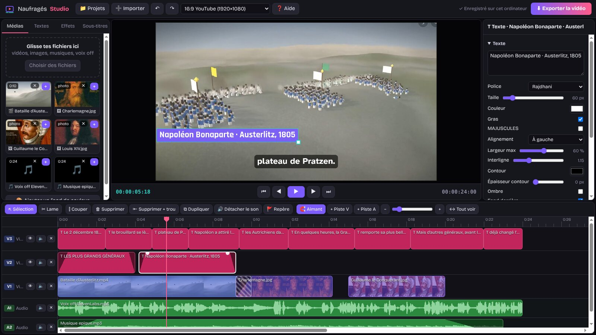
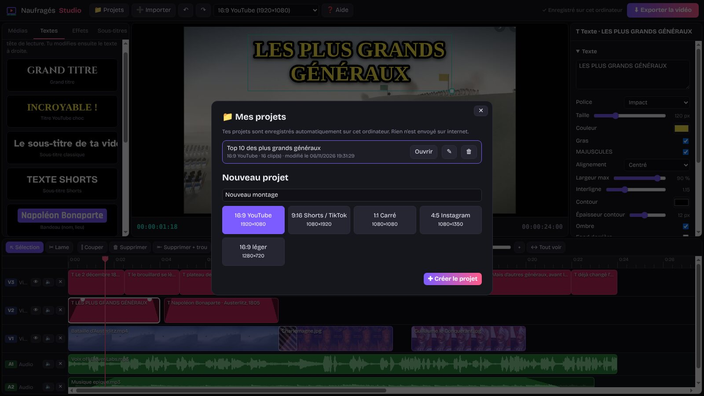
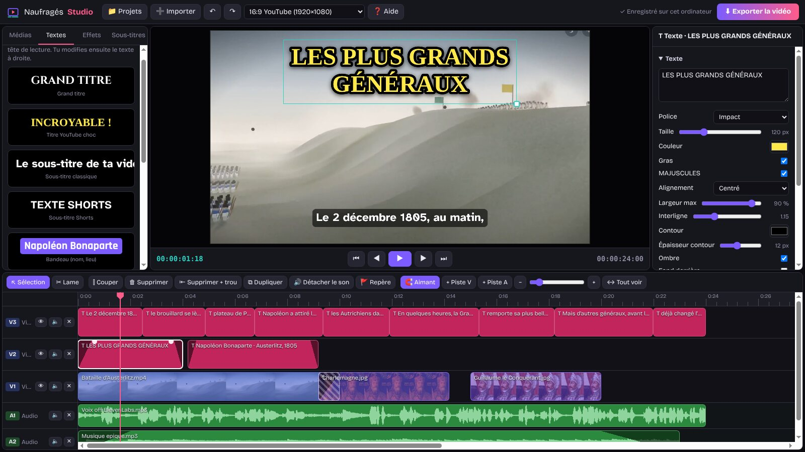
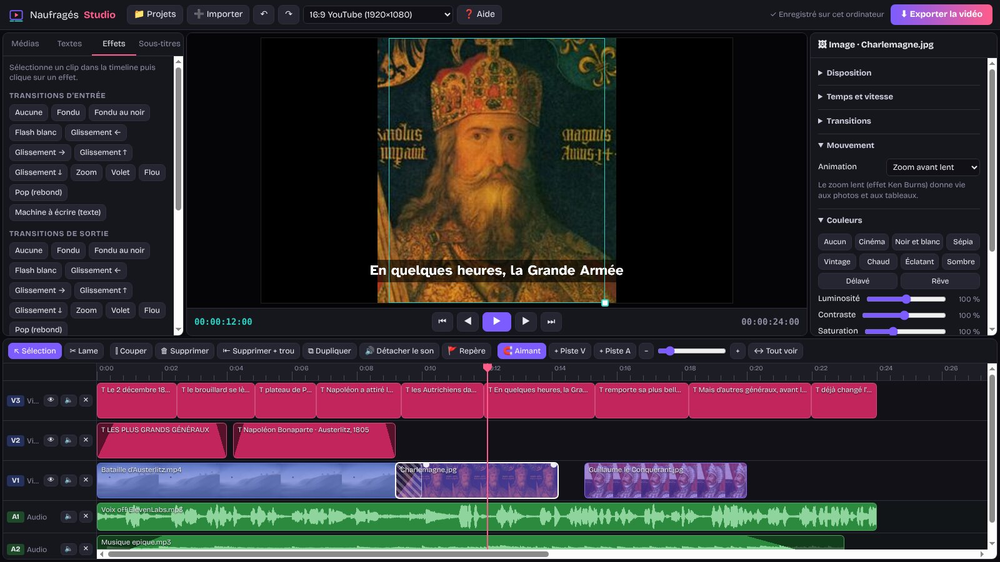
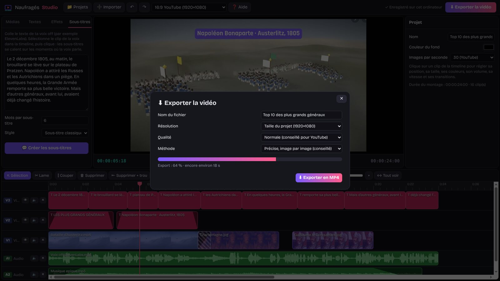
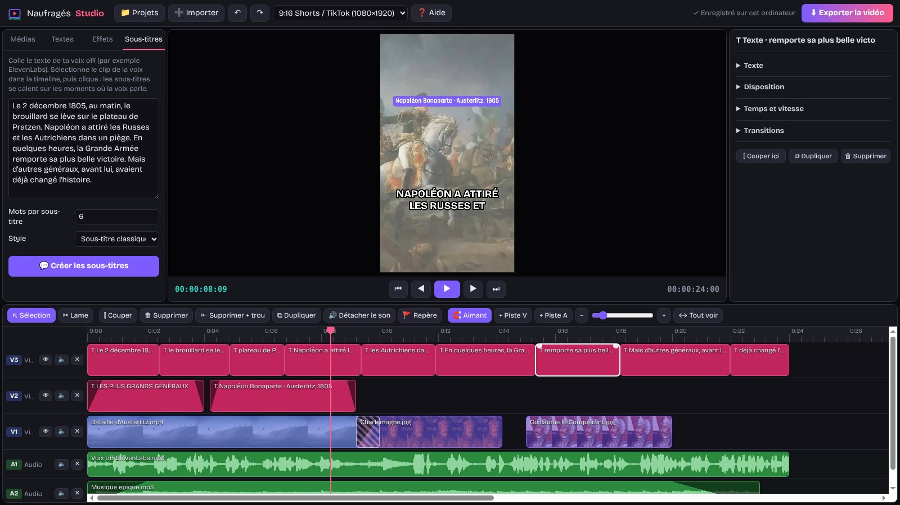

Le guide de Naufragés Studio
Tout ce qu'il faut savoir pour monter tes vidéos YouTube, tes Shorts et tes TikTok, des premiers pas jusqu'à l'export. Si tu as déjà utilisé Premiere Pro ou Vegas Pro, tu retrouveras vite tes repères.
1. Installer le logiciel
Naufragés Studio est gratuit. Il se télécharge sur la page de téléchargement et fonctionne ensuite sans internet.
| Système | Fichier | Installation |
|---|---|---|
| Windows 10 et 11 (64 bits) | NaufragesStudio-installation.exe | Ouvre le fichier et suis les étapes. Un raccourci est créé sur le bureau et dans le menu Démarrer. Une version sans installation existe aussi (NaufragesStudio-portable.zip) : décompresse-la et lance NaufragesStudio.exe. |
| Mac (Intel et Apple M1 à M4, macOS 12 ou plus récent) | NaufragesStudio-mac.zip | Double-clique pour décompresser, puis glisse l'app dans Applications. Sur les puces M, le Mac peut proposer d'installer Rosetta : accepte. |
| Linux (64 bits) | NaufragesStudio-linux.AppImage | Rends le fichier exécutable (clic droit > Propriétés > Autoriser l'exécution), puis double-clique dessus. |
Message de sécurité au premier lancement. Le logiciel n'a pas encore de certificat payant, donc le système demande une confirmation la première fois. Sous Windows, si « Windows a protégé votre ordinateur » s'affiche, clique sur Informations complémentaires puis sur Exécuter quand même. Sur Mac, fais un clic droit sur l'app > Ouvrir, puis confirme avec Ouvrir (ou va dans Réglages système > Confidentialité et sécurité > Ouvrir quand même).
Au tout premier lancement, une fenêtre de bienvenue résume les cinq étapes d'un montage. Tu peux la rouvrir à tout moment avec le bouton ❓ Aide ou la touche F1. La touche F11 passe le logiciel en plein écran.
2. Découvrir l'interface

L'écran est divisé en cinq zones, comme dans les logiciels professionnels :
3. Les projets
Un projet contient ton montage et les médias que tu y as importés. Il est enregistré automatiquement à chaque modification : l'indication « ✓ Enregistré sur cet ordinateur » apparaît en haut à droite. Il n'y a donc pas de bouton Enregistrer, et tu retrouves ton dernier projet en rouvrant le logiciel.

Créer, ouvrir, renommer, supprimer
- Clique sur 📁 Projets. La liste montre tous tes projets, du plus récent au plus ancien.
- Nouveau projet : écris son nom, choisis son format, puis clique sur Créer le projet.
- Ouvrir charge un projet. ✎ le renomme (valide avec Entrée). 🗑 le supprime avec les copies de ses médias. Tes fichiers d'origine sur l'ordinateur ne sont jamais touchés.
Le format de la vidéo
| Format | Taille | Pour quoi faire |
|---|---|---|
| 16:9 YouTube | 1920 × 1080 | Les vidéos YouTube classiques |
| 9:16 Shorts / TikTok | 1080 × 1920 | YouTube Shorts, TikTok, Reels Instagram |
| 1:1 Carré | 1080 × 1080 | Publications carrées (Instagram, Facebook) |
| 4:5 Instagram | 1080 × 1350 | Publications verticales Instagram |
| 16:9 léger | 1280 × 720 | Une vidéo plus légère, plus rapide à exporter |
Tu peux changer de format à tout moment avec la liste de la barre du haut : le montage est gardé tel quel. Quand aucun clip n'est sélectionné, l'inspecteur permet aussi de changer le nom du projet, la couleur du fond (visible là où il n'y a aucune image) et le nombre d'images par seconde (24, 25, 30 ou 60 ; 30 est conseillé pour YouTube).
4. Importer des médias
Trois façons d'importer tes fichiers :
- le bouton ➕ Importer (ou Ctrl + I), qui permet d'en choisir plusieurs à la fois ;
- glisser des fichiers depuis l'Explorateur Windows (ou le Finder) n'importe où dans la fenêtre ;
- glisser des fichiers directement sur une piste de la timeline : ils sont importés et placés à cet endroit, les uns à la suite des autres.
| Type | Formats acceptés |
|---|---|
| Vidéo | MP4, WebM, MOV, MKV, M4V, OGV (le MP4 en H.264 est le plus sûr) |
| Image | PNG, JPG, GIF, WebP, BMP, SVG, AVIF |
| Son | MP3, WAV, OGG, M4A, AAC, FLAC, Opus |
Chaque média apparaît dans l'onglet Médias avec une vignette et sa durée. Le logiciel en garde une copie dans le projet : tu peux ensuite déplacer ou renommer le fichier d'origine sans rien casser.
- Le bouton + d'un média (ou un double-clic dessus) l'ajoute au bout du montage : sur la piste V1 pour une vidéo ou une image, sur la piste A1 pour un son.
- Le bouton ✕ retire le média de la bibliothèque. S'il est utilisé dans la timeline, le logiciel demande confirmation, car ses clips seront supprimés aussi.
- 🎨 Ajouter un fond de couleur crée un aplat de couleur de 3 secondes au bout de la piste V1, pratique pour un écran titre.
Une image ajoutée dure 5 secondes par défaut. Tire son bord droit pour l'allonger autant que tu veux.
5. La timeline
Les pistes
Les pistes vidéo (V1, V2, V3…) sont en haut et les pistes audio (A1, A2…) en bas. Comme dans Premiere Pro, une piste vidéo plus haute passe devant les pistes du dessous : un texte sur V2 s'affiche par-dessus la vidéo de V1. Les textes et les fonds de couleur se placent sur les pistes vidéo.
- + Piste V ajoute une piste vidéo tout en haut, + Piste A une piste audio tout en bas.
- À gauche de chaque piste : 👁 cache ou montre une piste vidéo, 🔈 coupe ou remet le son de la piste, ✕ supprime la piste et ses clips. Il reste toujours au moins une piste vidéo et une piste audio.
Se déplacer dans le temps
- La tête de lecture (la ligne rose) indique l'image affichée dans le moniteur. Clique ou glisse dans la règle graduée pour la déplacer ; elle s'aimante au début et à la fin des clips.
- Un clic dans une zone vide d'une piste désélectionne le clip et y place la tête de lecture.
- Espace lance ou arrête la lecture. ← et → avancent image par image, Maj + ← / → d'une seconde. Origine et Fin vont au début et à la fin.
Zoom, aimant et repères
- Zoom : le curseur, les boutons − et +, les touches - et +, ou Ctrl + molette sur la timeline. ↔ Tout voir (touche \) affiche tout le montage d'un coup.
- 🧲 Aimant (activé par défaut) : quand tu déplaces ou raccourcis un clip, il se colle au début et à la fin des autres clips, à la tête de lecture et aux repères. Une ligne jaune en pointillé montre le point d'accroche.
- 🚩 Repère (touche M) pose un triangle jaune dans la règle, par exemple sur un temps fort de la musique. Clique dessus pour y aller, double-clique pour l'enlever.
6. Couper et assembler
Sélectionner et déplacer
- Clique sur un clip pour le sélectionner : il s'entoure de blanc et ses réglages s'affichent dans l'inspecteur. Échap désélectionne.
- Glisse-le pour le déplacer dans le temps. Glisse-le vers le haut ou le bas pour le changer de piste (une vidéo, une image ou un texte va sur une piste vidéo, un son sur une piste audio).
- Tire son bord gauche ou son bord droit pour le raccourcir ou le rallonger. Une vidéo ou un son ne peut pas dépasser la longueur du fichier d'origine.
Couper
- ⫿ Couper (touche S ou Ctrl + K) coupe le clip sélectionné à la tête de lecture. Si aucun clip n'est sélectionné, tous les clips sous la tête de lecture sont coupés.
- ✂ Lame (touche C) : chaque clic sur un clip le coupe à cet endroit, comme l'outil Cutter de Premiere. Reviens à l'outil ↖ Sélection avec la touche V.
Supprimer, dupliquer, copier
| Action | Bouton ou touche | Effet |
|---|---|---|
| Supprimer | Suppr | Enlève le clip et laisse un vide à sa place. |
| Supprimer + trou | Maj + Suppr | Enlève le clip et recule les clips suivants de la même piste pour boucher le vide. |
| Dupliquer | Ctrl + D | Place une copie juste après le clip et décale la suite de la piste. |
| Copier / Couper / Coller | Ctrl + C / X / V | Colle le clip à la tête de lecture, sur sa piste d'origine. |
| Annuler / Refaire | Ctrl + Z / Ctrl + Y | Jusqu'à 150 actions en arrière. |
7. Fondus et transitions
Le fondu enchaîné, comme dans Vegas
Fais chevaucher deux clips sur la même piste : la zone commune se hachure et le second clip apparaît en fondu par-dessus le premier. Le son passe aussi en douceur de l'un à l'autre. Plus le chevauchement est long, plus le fondu est lent.
Les fondus d'entrée et de sortie
Survole un clip : deux petits ronds blancs apparaissent en haut, à chaque coin. Tire celui de gauche vers la droite pour un fondu d'entrée, celui de droite vers la gauche pour un fondu de sortie. Un triangle sombre montre la durée du fondu. Sur un son, le volume monte et descend progressivement.
Les transitions
Sélectionne un clip, puis choisis une transition dans l'onglet Effets ou dans la rubrique Transitions de l'inspecteur, où tu règles aussi sa durée en secondes.
| Transition | Effet |
|---|---|
| Fondu | L'image apparaît ou disparaît en transparence. |
| Fondu au noir / Flash blanc | Tout l'écran passe par le noir ou par le blanc. |
| Glissement ← → ↑ ↓ | L'image entre ou sort en glissant dans la direction choisie. |
| Zoom | L'image grossit en apparaissant, ou s'agrandit en disparaissant. |
| Volet | L'image se dévoile de gauche à droite, ou se cache vers la gauche en sortie. |
| Flou | L'image passe du flou au net. |
| Pop (rebond) | L'image surgit avec un petit rebond, idéal pour les titres. |
| Machine à écrire | Les lettres d'un texte s'écrivent une à une (entrée des textes seulement). |
8. Textes et titres

Ouvre l'onglet Textes et clique sur un modèle : il se place à la tête de lecture pour 4 secondes, sur la première piste vidéo libre (une nouvelle piste est créée au besoin). Le texte est sélectionné dans l'inspecteur : tape directement le tien.
Les dix modèles : Grand titre, Titre YouTube choc, Sous-titre classique, Sous-titre Shorts, Bandeau (nom, lieu), Date historique, Gaming néon, Rétro pixel, Élégant et Abonne-toi !
Les réglages du texte
- Police (13 au choix, dont Cinzel pour l'histoire, Orbitron pour le gaming, Impact pour les titres choc), Taille, Couleur, Gras et MAJUSCULES.
- Alignement et Largeur max : au-delà de cette largeur, le texte passe à la ligne tout seul. Un retour à la ligne dans la zone de texte force une nouvelle ligne.
- Interligne, Contour (couleur et épaisseur), Ombre, et Fond derrière (couleur et opacité) pour un bandeau lisible sur n'importe quelle image.
Placer un texte à la souris : dans le moniteur, le clip sélectionné est entouré d'un cadre. Glisse l'intérieur du cadre pour le déplacer (il s'aimante au centre de l'écran) et le carré du coin pour l'agrandir. Cela marche aussi pour les vidéos et les images.
9. Sous-titres automatiques
Cette fonction crée les sous-titres d'une voix off à partir de son texte, par exemple le script que tu as donné à ElevenLabs.
- Place la voix off dans la timeline et clique dessus pour la sélectionner.
- Ouvre l'onglet Sous-titres et colle le texte exact de la voix off.
- Choisis le nombre de mots par sous-titre (6 par défaut ; 3 ou 4 donnent un rythme plus dynamique pour les Shorts) et le style.
- Clique sur 💬 Créer les sous-titres. Une nouvelle piste est ajoutée tout en haut avec un clip de texte par sous-titre.
Le logiciel coupe le texte aux fins de phrases, puis répartit les sous-titres sur les moments où la voix parle (il repère les silences sur la forme d'onde). Si aucun clip n'est sélectionné, il prend le premier son de la timeline.
Vérifie toujours le résultat : le calage est fait d'après les silences et la longueur des phrases, pas par reconnaissance de la parole. Écoute la vidéo, puis corrige un sous-titre en cliquant dessus (texte, début, durée) ou en tirant ses bords.
10. Cadrage, mouvement et couleurs

Disposition
- ⤢ Remplir l'écran agrandit l'image pour couvrir tout l'écran, quitte à couper les bords. ⤡ Tout voir montre l'image en entier, avec des bandes si son format est différent.
- Position X / Y, Taille, Rotation et Opacité se règlent avec des curseurs. ⟲ Recentrer remet tout à zéro.
- Un double-clic sur un curseur le remet à sa valeur de départ.
Mouvement
Le zoom avant lent, le zoom arrière lent et les panoramiques (← → ↑ ↓) font bouger doucement une photo pendant toute sa durée. C'est l'effet Ken Burns des documentaires : parfait pour les tableaux et les cartes.
Couleurs
Dix looks en un clic : Cinéma, Noir et blanc, Sépia, Vintage, Chaud, Éclatant, Sombre, Délavé, Rêve, et Aucun pour revenir à l'original. Tu peux ensuite affiner la luminosité, le contraste, la saturation, le noir et blanc, le sépia, la teinte et le flou.
11. Le son
- La forme d'onde s'affiche sur les sons et sur les vidéos qui en ont : les pics montrent les passages forts, les creux les silences.
- Volume : de 0 à 200 % dans la rubrique Son de l'inspecteur. Pour une musique sous une voix off, 20 à 30 % est un bon point de départ. 🔇 Couper le son met le clip à zéro.
- 🔊 Détacher le son place le son d'une vidéo sur une piste audio libre et coupe celui de la vidéo : tu peux alors le couper, le déplacer ou le régler séparément.
- Le bouton 🔈 d'une piste coupe tout le son de cette piste, sans toucher aux clips.
- Vitesse (rubrique Temps et vitesse) : de ×0,25 à ×4 pour les vidéos et les sons. Le clip devient plus long au ralenti et plus court en accéléré, et le son devient plus grave ou plus aigu.
12. Exporter la vidéo

Clique sur ⬇ Exporter la vidéo (ou Ctrl + E) et choisis :
| Réglage | Choix |
|---|---|
| Nom du fichier | Par défaut, le nom du projet. |
| Résolution | Taille du projet (par exemple 1920 × 1080), Plus légère (1280 × 720 pour un projet 1080p) ou Petite (la moitié). |
| Qualité | Normale (conseillée pour YouTube), Haute (fichier plus gros) ou Légère (pour partager vite). |
| Méthode | Précise, image par image (conseillée) : chaque image est calculée exactement. En temps réel : le montage est joué et enregistré, toujours à la taille du projet ; à utiliser seulement si la première méthode échoue. |
La barre de progression indique le temps restant ; garde le logiciel ouvert jusqu'au bout. Le bouton Annuler l'export arrête tout. À la fin, le logiciel te propose d'enregistrer le fichier dans ton dossier Vidéos, puis l'affiche dans l'Explorateur (le Finder sur Mac). La vidéo est au format MP4 (image H.264), prête à envoyer sur YouTube, TikTok ou Instagram.
L'export précis prend en général entre une et quelques fois la durée de la vidéo, selon la puissance de l'ordinateur. Pour aller plus vite, choisis la résolution Plus légère.
13. Tutoriel : une vidéo YouTube avec voix off
Objectif : une vidéo d'histoire en 16:9 avec une voix off, des images, une musique de fond, un titre et des sous-titres.
- Crée le projet : 📁 Projets > nom de la vidéo > format 16:9 YouTube > Créer le projet.
- Importe tout d'un coup : la voix off (par exemple le MP3 d'ElevenLabs), tes vidéos, tes images et ta musique.
- Pose la voix off : clique sur le + de la voix off. Elle se place au début de la piste A1. C'est elle qui donne le rythme de toute la vidéo.
- Ajoute les images : clique sur le + de chaque vidéo et image dans l'ordre de l'histoire. Elles se mettent bout à bout sur V1. Tire les bords pour les caler sur ce que dit la voix (place des repères avec M aux moments clés pour t'aider).
- Fais vivre les photos : sélectionne chaque image et choisis un zoom avant lent ou un panoramique dans l'onglet Effets.
- Soigne les passages : fais chevaucher les clips d'une demi-seconde pour des fondus enchaînés, ou ajoute une transition.
- Ajoute la musique : glisse-la sur la piste A2. Mets son volume entre 20 et 30 %, puis tire ses ronds blancs pour un fondu d'entrée et de sortie de 2 à 3 secondes.
- Ajoute un titre : place la tête de lecture au début, onglet Textes > Titre YouTube choc, puis tape ton titre. Ajoute un Bandeau pour présenter un personnage ou un lieu.
- Crée les sous-titres : sélectionne la voix off, colle son texte dans l'onglet Sous-titres, choisis le style Sous-titre classique et clique sur Créer les sous-titres. Relis-les en lecture.
- Exporte : Exporter la vidéo > Taille du projet > Qualité normale > Précise. Envoie ensuite le MP4 sur YouTube.
14. Tutoriel : un Short vertical

- Choisis le format 9:16 : crée un projet 9:16 Shorts / TikTok, ou change le format d'un montage existant dans la barre du haut.
- Remplis l'écran : sélectionne chaque vidéo ou image horizontale et clique sur ⤢ Remplir l'écran dans l'inspecteur. Glisse-la dans le moniteur pour choisir la partie visible.
- Reste court : un Short peut durer jusqu'à 3 minutes, mais les plus regardés tiennent souvent en moins d'une minute. Coupe avec S et enlève les passages lents avec Maj + Suppr.
- Des sous-titres bien visibles : onglet Sous-titres, 3 ou 4 mots par sous-titre et le style Sous-titre Shorts (gros texte en majuscules avec contour).
- Accroche dès la première seconde : un texte Titre YouTube choc avec l'entrée Pop (rebond).
- Exporte en taille du projet (1080 × 1920) et publie le fichier sur YouTube Shorts, TikTok ou Instagram Reels.
15. Raccourcis clavier
Sur Mac, remplace Ctrl par ⌘ Cmd.
| Touche | Action |
|---|---|
| Espace | Lecture / pause |
| J / K / L | Reculer d'une seconde / pause / avancer d'une seconde |
| ← / → | Image précédente / suivante |
| Maj + ← / → | Reculer / avancer d'une seconde |
| Origine / Fin | Aller au début / à la fin du montage |
| S ou Ctrl + K | Couper à la tête de lecture |
| V / C | Outil Sélection / outil Lame |
| Suppr / Maj + Suppr | Supprimer / supprimer et boucher le trou |
| Ctrl + Z / Ctrl + Y | Annuler / refaire |
| Ctrl + C / X / V | Copier / couper / coller un clip |
| Ctrl + D | Dupliquer le clip |
| M | Ajouter un repère |
| + / - / \ | Zoomer / dézoomer / voir tout le montage |
| Ctrl + molette | Zoomer sur la timeline à l'endroit de la souris |
| Ctrl + I / Ctrl + E | Importer / exporter |
| Échap | Désélectionner, fermer une fenêtre |
| F1 / F11 | Aide / plein écran |
16. Questions et dépannage
Une vidéo ne s'importe pas
Son format n'est pas lisible par le logiciel (c'est parfois le cas des fichiers MOV de téléphone en HEVC ou des MKV). Convertis-la en MP4 (H.264) avec le logiciel gratuit HandBrake, puis importe-la à nouveau.
Où sont enregistrés mes projets ?
Dans le dossier du logiciel sur ton ordinateur : %APPDATA%\Naufrages Studio sous Windows, ~/Library/Application Support/Naufrages Studio sur Mac et ~/.config/Naufrages Studio sous Linux. Ils ne sont envoyés sur aucun serveur. Désinstaller le logiciel ne les efface pas, mais supprimer ce dossier, si.
J'ai fait une erreur
Ctrl + Z annule les dernières actions, une par une. Ctrl + Y les refait.
L'export échoue ou est très lent
Choisis la résolution Plus légère, ferme les autres programmes lourds, puis réessaie. Si l'export précis échoue encore, utilise la méthode En temps réel.
La lecture saccade dans le moniteur
L'aperçu calcule l'image en direct : avec beaucoup de pistes ou de très grosses vidéos, un ordinateur modeste peut ralentir. La vidéo exportée, elle, est toujours fluide, car chaque image est calculée sans se presser.
Sur Mac : « NaufragesStudio est endommagé »
Ce message vient de la protection du Mac pour les apps sans certificat payant, l'app n'est pas abîmée. Glisse d'abord l'app dans Applications, ouvre le Terminal (Applications > Utilitaires) et tape :
xattr -cr "/Applications/NaufragesStudio.app"
Appuie sur Entrée, puis ouvre l'app normalement.
Le logiciel est-il vraiment gratuit ?
Oui, sans publicité dans le logiciel, sans filigrane sur tes vidéos et sans compte à créer.
Une autre question, une idée ?
Viens en parler sur le Discord des Naufragés : les prochaines versions se construisent avec vos retours.